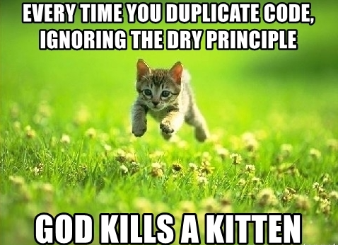
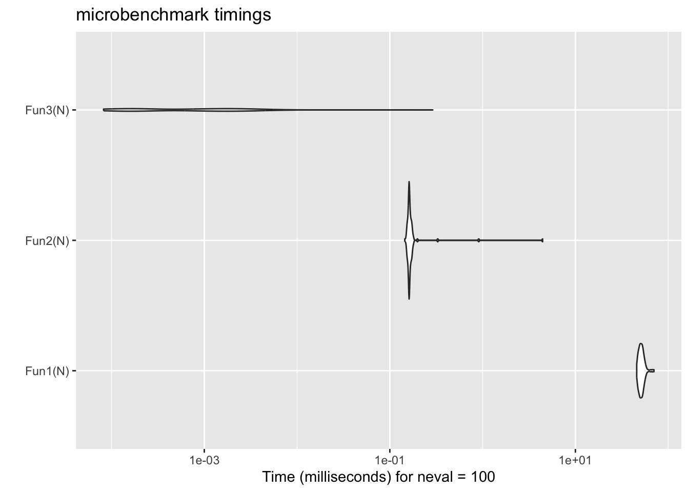
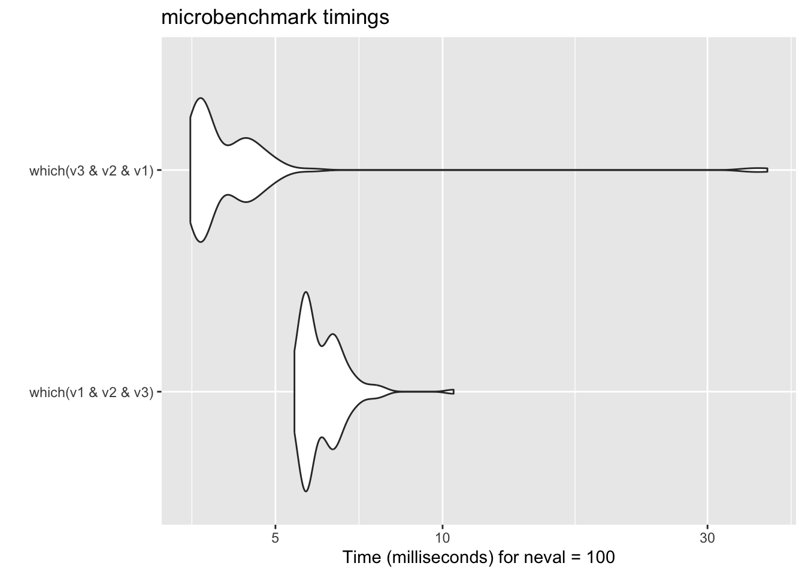
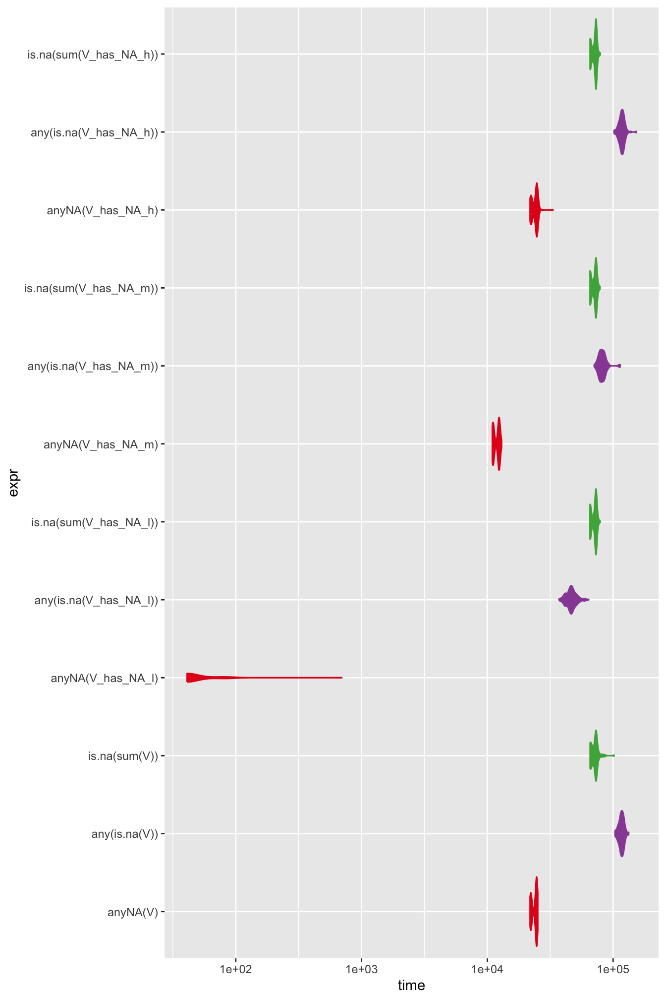
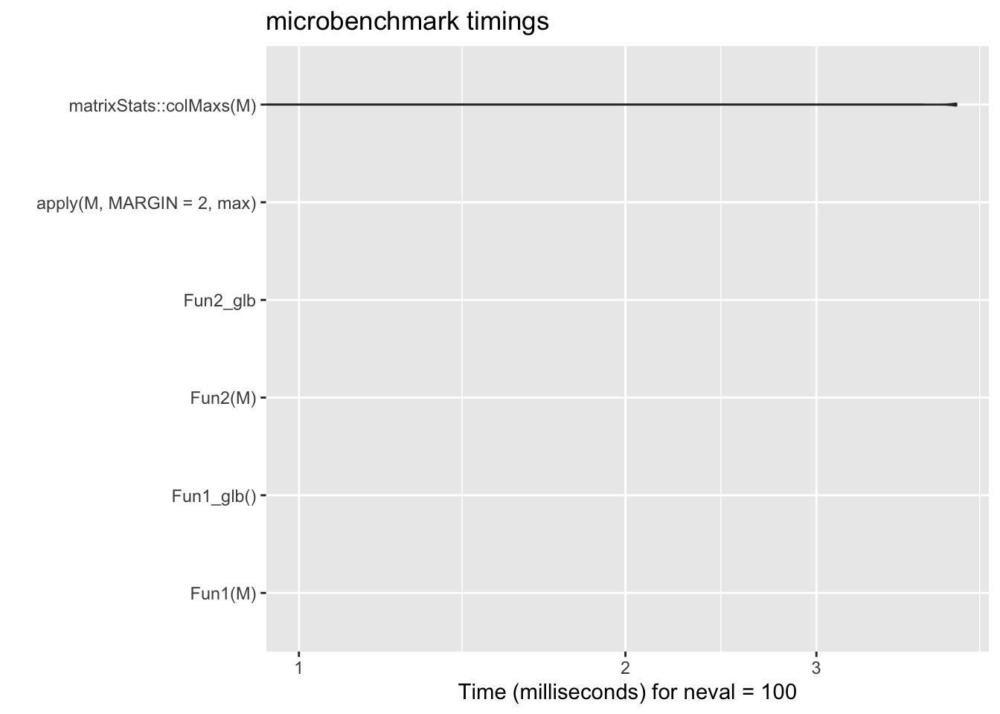
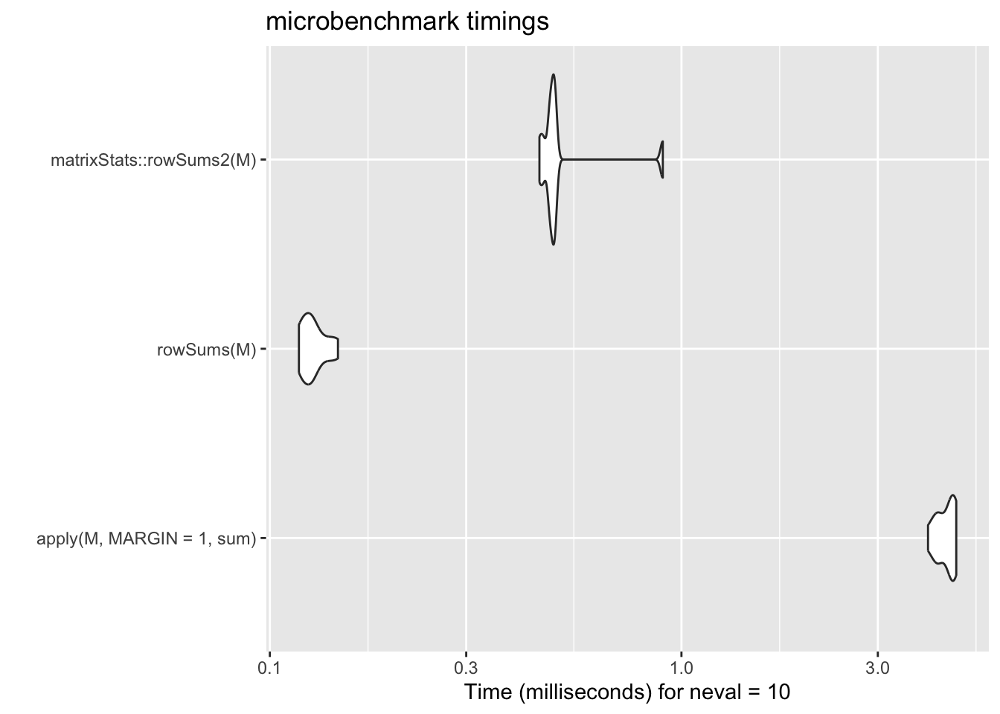

MonteCarloPiV1 <- function (n) {
stopifnot(n > 1)
n_inside_count <- 0
for (ii in seq_len(n)) {
x <- runif(1)
y <- runif(1)
if (x^2 + y^2 < 1) {
n_inside_count <- n_inside_count + 1
}
}
return(n_inside_count / n)
}
N <- 500000
system.time(pi_est <- MonteCarloPiV1(N)*4)
stopifnot(pi_est - pi < 0.01)
print("test passed")18 Performance
Outline
- Example performance optimisation workflow
- General techniques
- Benchmarking by yourself
Recommended Readings:
Workflow:
- Have correct implementation
- Profile (
profvi,microbenchmark) - Optimise
18.1 Good practices

rm(list = ls())at the beginning of your script- Make sure you understand all warnings
- Don’t repeat yourself (DRY)
- Use functions (Session 1)
- Vectorise functions (Session 3)
- Use inheritance (Session 6)
- Readable code
- Comment where needed
- No magic numbers
- Variable names
BigCamelCasefor function namessnake_casefor everything elseALL_CAPSfor constants
- Version control
18.2 Code Profiling
We now demonstrate the process of optimising the performance of an algorithm’s implementation using the profiling tool provided by RStudio. The algorithm we implement is the Monte Carlo integration method to estimate the value of pi. The idea is to randomly sample points in a unit square and count how many of them fall within a quarter circle inscribed within that square. The ratio of points inside the quarter circle to the total number of points sampled can be used to estimate pi.
18.2.1 Version 1
profvis- Profile an R expression and visualise profiling data- RStudio > Profile > Profile Selected Line(s)
- We see that most of the time is spent on the two
runifcalls
18.2.2 Version 2
MonteCarloPiV2 <- function (n) {
stopifnot(n > 1)
n_inside_count <- 0
x_sq <- runif(n)
y_sq <- runif(n)
for (ii in seq_along(x_sq)) {
if (x_sq[ii]^2 + y_sq[ii]^2 < 1) {
n_inside_count <- n_inside_count + 1
}
}
return(n_inside_count / n)
}
# MonteCarloPiV2(1000)*4
N <- 500000
N <- N * 10
system.time(pi_est <- MonteCarloPiV2(N)*4)
stopifnot(pi_est - pi < 0.01)
print("test passed")- Increase the size of N to see that most of the time is spent in the
forloop
18.2.3 Version 3
MonteCarloPiV3 <- function (n) {
stopifnot(n > 1)
n_inside_count <- 0
x_sq <- runif(n)
y_sq <- runif(n)
d_sq <- x_sq^2 + y_sq^2
d_sq_bol <- d_sq < 1
n_inside_count <- length(d_sq_bol[d_sq_bol == TRUE])
return(n_inside_count / n)
}
# MonteCarloPiV2(1000)*4
N <- 500000
N <- N * 10
system.time(pi_est <- MonteCarloPiV3(N)*4)
stopifnot(pi_est - pi < 0.01)
print("test passed")18.2.4 Version 4
MonteCarloPiV4 <- function (n) {
stopifnot(n > 1)
n_inside_count <- 0
x_sq <- runif(n)
y_sq <- runif(n)
d_sq <- x_sq^2 + y_sq^2
d_sq_bol <- d_sq < 1
n_inside_count <- sum(d_sq_bol, na.rm = TRUE)
return(n_inside_count / n)
}
# MonteCarloPiV2(1000)*4
N <- 500000
N <- N * 10
system.time(pi_est <- MonteCarloPiV4(N)*4)
stopifnot(pi_est - pi < 0.01)
print("test passed")18.2.5 microbenchmark
18.3 General principles
18.3.1 Don’t grow your data
rm(list = ls())
Fun1 <- function(n) {
res <- NULL
for (ii in seq_len(n)) {
res <- c(res, ii)
}
return(res)
}
Fun2 <- function(n) {
res <- numeric(n) # pre-allocate memory space
for (ii in seq_len(n)) {
res[ii] <- ii
}
return(res)
}
Fun3 <- function(n) {
return(seq_len(n)) # use a built-in function when possible
}
N <- 10000
if (!exists("mb_res2")) {
mb_res2 <- microbenchmark::microbenchmark(
times = 100, unit = "ms",
Fun1(N), Fun2(N), Fun3(N)
)
}Warning in microbenchmark::microbenchmark(times = 100, unit = "ms", Fun1(N), :
less accurate nanosecond times to avoid potential integer overflowsWarning: `aes_string()` was deprecated in ggplot2 3.0.0.
ℹ Please use tidy evaluation idioms with `aes()`.
ℹ See also `vignette("ggplot2-in-packages")` for more information.
ℹ The deprecated feature was likely used in the microbenchmark package.
Please report the issue at
<https://github.com/joshuaulrich/microbenchmark/issues/>.
18.3.2 Lazy evaluation

18.3.3 Use low level structure
18.4 BIY
Benchmark it yourself
18.4.1 Check for NA
rm(list = ls())
N <- 1e5
V <- runif(N)
V_has_NA_l <- V # low
V_has_NA_m <- V # mid
V_has_NA_h <- V # high
V_has_NA_l[1] <- NA
V_has_NA_m[N/2] <- NA
V_has_NA_h[N] <- NA
mb_res5 <- microbenchmark::microbenchmark(
times = 100, unit = "ms",
anyNA(V), any(is.na(V)), is.na(sum(V)),
anyNA(V_has_NA_l), any(is.na(V_has_NA_l)), is.na(sum(V_has_NA_l)),
anyNA(V_has_NA_m), any(is.na(V_has_NA_m)), is.na(sum(V_has_NA_m)),
anyNA(V_has_NA_h), any(is.na(V_has_NA_h)), is.na(sum(V_has_NA_h))
)Warning in microbenchmark::microbenchmark(times = 100, unit = "ms", anyNA(V), :
Could not measure a positive execution time for 10 evaluations.stopifnot(!any(
anyNA(V), any(is.na(V)), is.na(sum(V))
))
stopifnot(all(
anyNA(V_has_NA_l), any(is.na(V_has_NA_l)), is.na(sum(V_has_NA_l))
))
stopifnot(all(
anyNA(V_has_NA_m), any(is.na(V_has_NA_m)), is.na(sum(V_has_NA_m))
))
stopifnot(all(
anyNA(V_has_NA_h), any(is.na(V_has_NA_h)), is.na(sum(V_has_NA_h))
))
library("ggplot2", "RColorBrewer")
# ggplot2::autoplot(mb_res5, fill = expr) +
# scale_fill_brewer(palette="Set1")
col_list <- c("#E41A1C", "#984EA3", "#4DAF4A") #"#377EB8"
ggplot(data = mb_res5, aes(x = expr, y = time, fill = expr, col = expr)) +
geom_violin() +
scale_y_continuous(trans = "log10") +
# scale_fill_brewer(palette="Set1") +
scale_color_manual(values = rep(col_list, 4)) +
scale_fill_manual(values = rep(col_list, 4)) +
theme(legend.position = "none") +
coord_flip()Warning in scale_y_continuous(trans = "log10"): log-10 transformation
introduced infinite values.Warning: Removed 46 rows containing non-finite outside the scale range
(`stat_ydensity()`).
- Some algorithms’ performance is data dependent
18.4.2 Column-wise max
rm(list = ls())
C <- 100
# C <- 1000 # Some algorithm's performance is data-dependent
# M <- matrix(1:C^2, nrow = C/2)
M <- matrix(runif(C^2), nrow = C/2)
Fun1 <- function(m) {
c <- ncol(m)
res <- numeric(c)
for (cc in seq_len(c)) {
res[cc] <- max(m[, cc])
}
return(res)
}
Fun1_glb <- function() {
c <- ncol(M)
res <- numeric(c)
for (cc in seq_len(c)) {
res[cc] <- max(M[, cc])
}
return(res)
}
stopifnot(identical(Fun1(M), Fun1_glb()))
Fun2 <- function(m) {
return(apply(m, MARGIN = 2, max))
}
Fun2_glb <- function() {
return(apply(M, MARGIN = 2, max))
}
# stopifnot(identical(Fun2(M), Fun2_glb()))
# stopifnot(all.equal(Fun1(M), Fun2(M), matrixStats::colMaxs(M)))
mb_res3 <- microbenchmark::microbenchmark(
times = 100, unit = "ms",
Fun1(M),
Fun1_glb(),
Fun2(M),
Fun2_glb,
apply(M, MARGIN = 2, max),
matrixStats::colMaxs(M)
)Warning in microbenchmark::microbenchmark(times = 100, unit = "ms", Fun1(M), :
Could not measure a positive execution time for 36 evaluations.Warning in ggplot2::scale_y_log10(name = y_label): log-10 transformation
introduced infinite values.Warning: Removed 68 rows containing non-finite outside the scale range
(`stat_ydensity()`).
18.4.3 Row-wise sum
rm(list = ls())
C <- 1000
# C <- 1000 # Some algorithm's performance is data-dependent
# M <- matrix(1:C^2, nrow = C/2)
M <- matrix(runif(C^2), nrow = C)
# stopifnot(all.equal(
# apply(M, MARGIN = 1, sum),
# rowSums(M),
# matrixStats::rowSums2(M)
# ))
mb_res_sum <- microbenchmark::microbenchmark(
times = 10, unit = "ms",
apply(M, MARGIN = 1, sum),
rowSums(M),
matrixStats::rowSums2(M)
)
ggplot2::autoplot(mb_res_sum)
18.5 Summary
- Use vectorised function
- Remember that there is no scalar type in R
- Know which functions are vectorised
- Avoid for loop when possible
- Hand over to R as soon as possible
- Don’t grow your data
- Utilise lazy evaluation
- Use low level structure
- Specify integer when possible
- Compare different methods yourself
- Ask Google (example)
- There is Rcpp to look forward to
Revision
- What have we achieved this week:
- We learnt ~5% of what R can do, maybe.
- The CRAN package repository features 18090 packages, source
- We learnt ~0.01% of what programming languages can do, likely less.
- What is R?
- Look at the language as a statistician
- Functions
- Session 1:
- How to write your own function
- Everything that happens in R is a function call
- Session 2:
- Function environment
- Session 3&4:
- Apply functions to vectors
- Session 1:
- Vectors
- Session 3
- There is no scalar type in R
- Everything is a fancy vector
- Session 4
- How to work with vectors
- Session 9
- Utilise vectorised functions
- Session 3

What to do next?
- Practice, practice, …
- Project Euler, https://projecteuler.net/
- https://leetcode.com/
- Advanced R Solutions
- Code reading skills
- Get help in R
?str
- Learn editor tricks
ALT+ click up/downALT + SHIFT+ click and drag a rectangleCTRL + ALT + SHIFT + M(find in scope)- More tricks